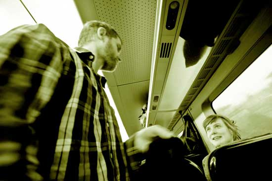

Nyheter
Vad händer med kvinnofrids- arbetet i Malmö?

Kvinnofridsarbetet ska stärkas så att det även omfattar papperslösa kvinnor. I förhandlingar med S och Mp när vi bildade majoritet i Malmö var detta en av de frågor som Vänsterpartiet drev igenom. Nu startar dialogen med...
läs mer
Anslut dig
Malmö – fristad för papperslösa är en långsiktigt växande rörelse av folklig solidaritet med papperslösa och gömda flyktingar. Vi vänder oss till institutioner, organisationer, företag, föreningar, etc, runtom i Malmö och uppmuntrar er som arbetar i dessa att göra era verksamheter tillgängliga för papperslösa.
Även de asylsökande som lever här utan uppehållstillstånd är malmöbor och behöver precis som vi andra en meningsfull vardag. Detta kan åstadkommas genom att vi ser till att de verksamheter som idag bara är öppna för personer med personnummer görs tillängliga även för de som saknar de fyra sista siffrorna, och/eller genom att särskilda rabatter och gratiserbjudanden för papperslösa införs på varor och tjänster som är avgiftsbelagda.
Ni som vill erbjuda fristad ska kunna göra det utifrån era förutsättningar och på sina egna villkor, öppet eller anonymt på hemsidan. Vi hjälper gärna till med att försöka hitta lösningar för er så att ni kan överkomma eventuella hinder för att inkludera papperslösa i er verksamhet.
Fyll i formuläret så hör vi av oss så fort vi kan!
Malmö för alla
I Malmö lever många personer som saknar uppehållstillstånd och därför får sina liv begränsade på olika sätt i vardagen. Att personer som inte fått uppehållstillstånd väljer att stanna i Sverige istället för att låta sig utvisas gör inte att deras behov och drömmar skiljer sig från andras. Vi vill att alla Malmöbor ska ha tillgång till det som staden har att erbjuda. Därför är vi med och erbjuder en fristad för papperslösa!
Anslut er
ChecklistaGoda Exempel
Gå med